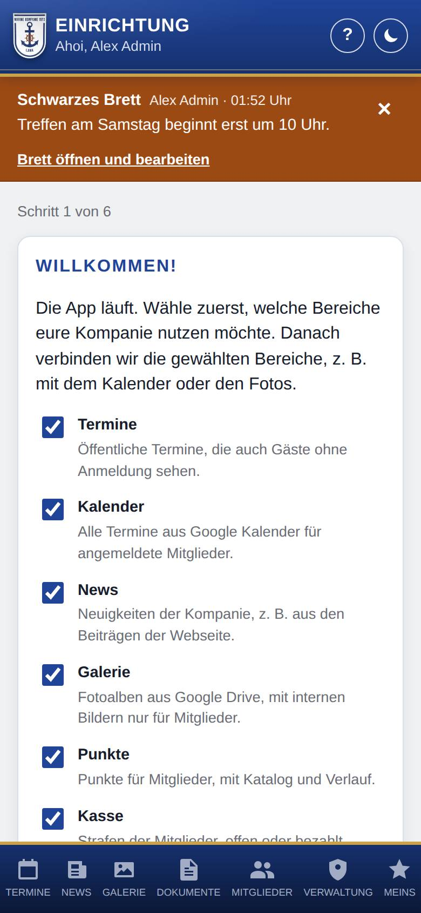
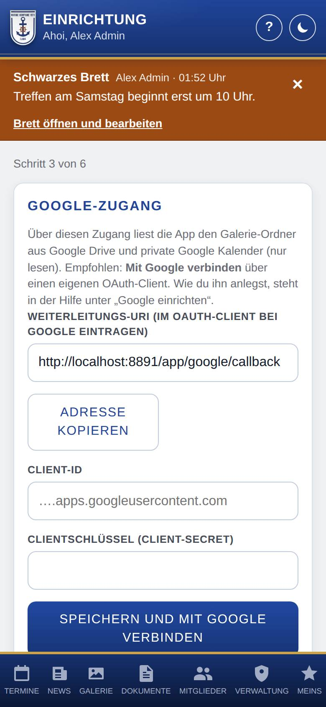
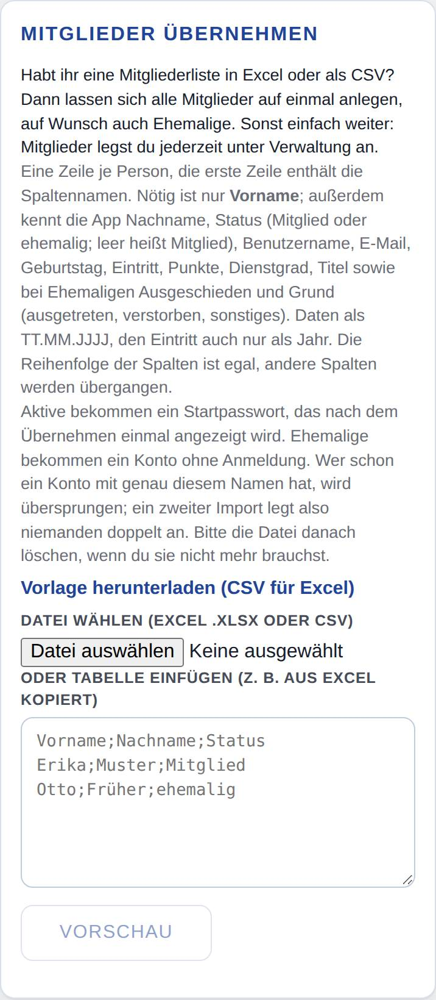
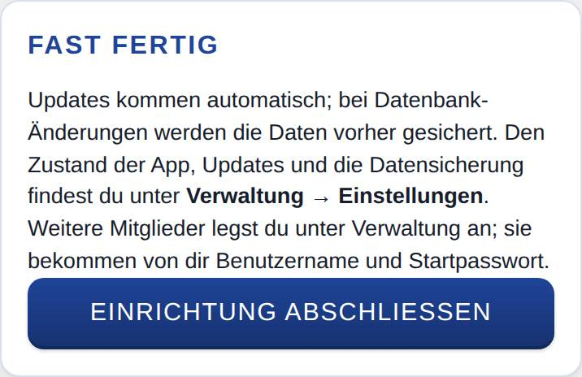

Einrichtungsassistent
Der Einrichtungsassistent führt dich nach der Installation Schritt für Schritt durch das Wichtigste: Bereiche wählen, Kalender, Galerie und News verbinden, Mitglieder übernehmen. Alles, was du hier einstellst, kannst du später unter Einstellungen ändern.

So öffnest du die Seite
Solange die Einrichtung nicht abgeschlossen ist, steht für Admins oben auf jeder Seite Willkommen! mit dem Knopf Einrichtung starten. Tippe darauf. Hat die App noch keinen Bereich, landest du nach der Anmeldung direkt im Assistenten.
Was du hier siehst
- Schritt … von …: wo du gerade bist. Wie viele Schritte es gibt, hängt von den gewählten Bereichen ab.
- Willkommen!: der erste Schritt mit je einem Schalter pro Bereich und einem Satz, wofür er da ist.
- Zurück und Weiter: unter den mittleren Schritten. Mit Weiter überspringst du einen Schritt, ohne etwas zu speichern.
So gehst du vor
Bereiche wählen
- Schalte die Bereiche ein, die eure Kompanie nutzt.
- Tippe auf Weiter. Die Auswahl wird jetzt gespeichert.
Diesen Schritt kannst du nicht überspringen. Ohne Bereich zeigt die App nur die Anleitung zum Installieren. Mehr zu den einzelnen Schaltern: Bereiche.
Kalender, Galerie und News verbinden
Für jeden gewählten Bereich, der eine Verbindung braucht, folgt ein eigener Schritt:
- Kalender für Mitglieder (wenn Kalender an ist), siehe Kalender einrichten.
- Google-Zugang und Galerie aus Google Drive (wenn Galerie an ist), siehe Google-Zugang und Galerie einrichten. Ist Galerie aus, steht der Google-Zugang im Schritt für den Kalender.
- Neuigkeiten (wenn News an ist; nur ohne WordPress).
- Fülle die Felder aus und tippe im Abschnitt auf Speichern.
- Tippe auf Weiter. Willst du das später erledigen, tippe gleich auf Weiter.

Mitglieder übernehmen
Habt ihr eine Mitgliederliste in Excel oder als CSV, legst du hier alle Mitglieder auf einmal an, auf Wunsch auch Ehemalige. Wie das geht, steht unter Mitglieder aus einer Datei übernehmen. Nach dem Übernehmen tippst du auf Weiter zum letzten Schritt. Ohne Liste tippst du einfach auf Weiter.

Einrichtung abschließen
- Im letzten Schritt Fast fertig lässt du den Haken bei Statusmeldungen an die Betreuer der App senden gesetzt oder entfernst ihn. Den Haken gibt es nur, wenn eure App Statusmeldungen vorsieht (siehe Zustand und Updates).
- Tippe auf Einrichtung abschließen. Die App öffnet die Verwaltung.

Gut zu wissen
- Die Einrichtung gilt als abgeschlossen, sobald ein Admin auf Einrichtung abschließen getippt hat. Danach verschwindet der Hinweis Willkommen! für alle.
- Weitere Mitglieder legst du danach in der Verwaltung an; sie bekommen von dir Benutzername und Startpasswort (siehe Mitglied anlegen).